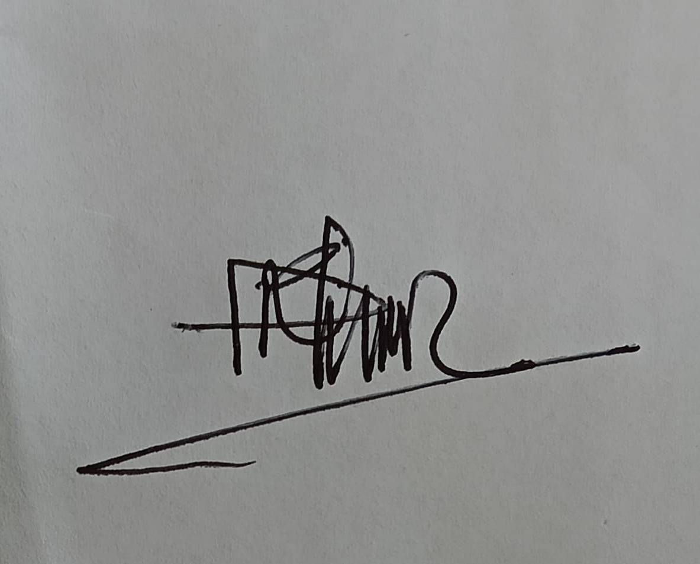

Drs. H.ZAINAL ARIFIN,MA
Ketua Forum Kerukunan Umat Beragama Kota Parepare

Verifikasi Tanda Tangan
Halaman ini menampilkan tanda tangan resmi Ketua Forum Kerukunan Umat Beragama (FKUB) Kota Parepare. Dokumen yang memuat barcode ini ditandatangani oleh yang bersangkutan.